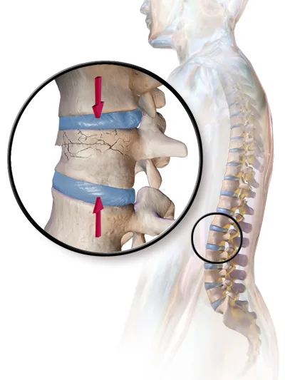
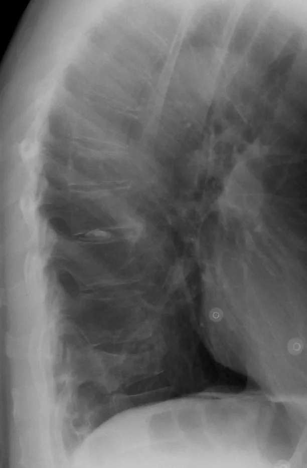
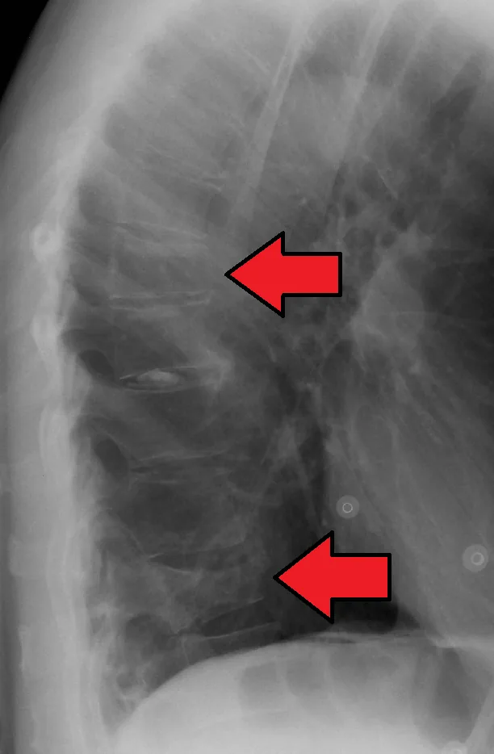

DX.1 — Fracture thoraco-lombaire par compression
1. Définition
Ici, le sous-type de compression cunéiforme (A1), publié en 2013, est un tassement ou une impaction d’un seul plateauvaccaro2013.
Ici, le mur postérieur du corps vertébral n’est pas atteint, et la légende de la figure 4 laisse le canal intactvaccaro2013.
Ici, le groupe AOSpine, division clinique de la fondation du même réseau, a fixé ce libellé dans Spinevaccaro2013.
Cliniquement, la définition décrit donc une fracture du corps qui reste en avant du mur postérieur, sans translationvaccaro2013.
Elle se lit sur la coupe. Le texte de 2013 prévoit la lecture de la morphologie sur la tomodensitométrie (TDM)vaccaro2013.
Ici, le manuscrit a été reçu le 3 avril 2013, révisé le 14 juin et accepté le 24 juinvaccaro2013.
2. Épidémiologie (Suisse, puis Europe)
Cliniquement, la revue suisse du 21 décembre 2005 compte les lésions thoraco-lombaires parmi les plus fréquentes du rachisrms2005-freq.
Elle cite plus de 150000 lésions rachidiennes par an aux États-Unis, et près de 11000 atteintes médullairesrms2005-freq.
Les chiffres qu’elle donne pour l’Union européenne sont équivalents à ceux cités pour les États-Unisrms2005-freq.
Ils décrivent ces deux ensembles. Ils ne décrivent pas la Suisse seulerms2005-freq.
Aucune incidence suisse propre au tassement cunéiforme n’est publiée dans les textes lus pour ce diagnostic.
À l’examen, la cohorte germanophone réunit 865 blessés, dont 548 fractures de type A, soit 63,3 %reinhold-de.
Ce pourcentage mélange le tassement et le burst. Le type A de Magerl les garde ensemblereinhold-de.
Les distractions de type B sont 181, soit 20,9 %, et les rotations de type C sont 136, soit 15,7 %reinhold-de.
À l’examen, la jonction, de la onzième thoracique (T11) à la deuxième lombaire (L2), porte 68,8 % des fracturesreinhold-de.
À l’examen, la première lombaire (L1) et la douzième thoracique (T12) se lisent dans cette jonction, sans rang séparéreinhold-de.
Huit cliniques allemandes et autrichiennes ont inclus les blessésreinhold-de.
Ici, le dénominateur de cette cohorte reste allemand et autrichien, non suissereinhold-de.
Parmi eux, 733 ont été opérés, 52 traités sans opération, 69 par plastie et 7 d’une autre façonreinhold-de.
Dans le groupe opéré, les accidents de la route font 27,1 % et les chutes banales 15,8 %reinhold-de.
Les chutes banales montent à 55,8 % chez les patients non opérés, et à 66,7 % dans le groupe plastiereinhold-de.
Ici, le score visuel analogique (VAS) avant l’accident valait 80 chez les opérés, 75 sans opération et 72 après plastiereinhold-de.
Dans la série opératoire publiée à part, le type A tombe à 424 patients, soit 57,8 % des 733reinhold-enreinhold-de.
Ce second pourcentage ne classe pas le tassement au-dessus du burstreinhold-en.
Il compte encore tout le type A, burst comprisreinhold-en.
Les distractions opérées y sont 178, soit 24,3 %, et les rotations 131, soit 17,9 %reinhold-en.
À l’examen, la jonction T11-L2 y représente 67,0 % des cas opérés, un peu moins que dans la cohorte entièrereinhold-en.
À l’examen, la voie postérieure seule concerne 380 opérés, soit 51,8 %, et la voie antérieure seule 34, soit 4,6 %reinhold-en.
À l’examen, la double voie concerne 319 opérés, soit 43,5 %, surtout quand le corps antérieur est très détruitreinhold-en.
Au thorax, de la première thoracique (T1) à la dixième (T10), 65 % des opérés gardent un seul abord postérieurreinhold-en.
Entre la troisième lombaire (L3) et la cinquième (L5), cette voie postérieure seule concerne 57 % des opérésreinhold-en.
À la jonction, 47 % des opérés ont eu un abord postérieur seul, et 47 % une double voiereinhold-en.
Une revue allemande de 2018 retient environ 8000 fractures thoraciques et lombaires graves chaque année en Allemagnespiegl2018.
Elle attribue au type A une paraplégie complète dans 2 % des cas et un déficit incomplet dans 11 %spiegl2018.
Ici, le même tableau donne 7,5 % au sous-type A1, tout en disant que les hospitalisés sous-estiment ce tassementspiegl2018.
Pour ce blessé, la revue écarte les moins de 18 ans et les plus de 65 ans quand l’ostéoporose est probablespiegl2018.
Elle écarte aussi la chute banale, afin de garder le traumatisme suffisant et non le tassement pathologiquespiegl2018.
Ici, le comité mondial, après 39 articles dont 15 consacrés au thoraco-lombaire, retient environ 30 fractures pour 100000 habitantswfns2021.
Ce taux inclut les fractures ostéoporotiqueswfns2021.
Il ne mesure pas le seul tassement traumatique du sujet jeunewfns2021.
Ici, le consensus du comité était acquis à partir de 66 %, sur deux réunions, et 24 articles concernaient tout le rachiswfns2021.
Un registre suédois de 13496 patients, de 1997 à 2010, compte 30 fractures thoraco-lombaires pour 100000 habitantswfns2021.
Les hommes y sont 62 %, les accidents de la route 38,7 % et les chutes de hauteur 23,8 %wfns2021.
Ce registre inclut lui aussi l’ostéoporose, et il ne documente pas séparément l’os fragilewfns2021.
Dans la cohorte européenne des blessés graves, 250584 adultes ont été analysés et 9,6 % avaient une fracture ou une luxation rachidiennetarn.
Une lésion médullaire, avec ou sans fracture, concernait 1,8 % de cette cohorte, soit un autre dénominateurtarn.
Parmi les fractures, le lombaire représentait 37,09 % et le thoracique 28,06 %, sans isoler le tassement cunéiformetarn.
Pour ce blessé, la chute de plus de 2 m multipliait le rapport de cotes par 4,17 pour la fracture ou la luxationtarn.
L’âge médian des blessés du rachis était de 44,5 ans, et 64,9 % étaient des hommestarn.
Pour ce blessé, la fenêtre de la cohorte germanophone sépare les deux dénominateurs.
Les confondre inverserait le rang entre la cohorte entière et les seuls opérés.
Pour ce blessé, la cohorte de 865 patients sert à la fréquence du type A, et non à la seule décision opératoirereinhold-de.
Pour ce blessé, la série de 733 opérés décrit les voies d’abordreinhold-enreinhold-de.
Son 57,8 % ne remplace pas le 63,3 % de la cohorte entièrereinhold-enreinhold-de.
Ici, le suivi de 558 opérés, soit 76,1 %, a été recueilli du 1 janvier 2004 au 31 mai 2006reinhold-en.
L’ablation postérieure moyenne concernait 382 patients, environ 12 mois après la fixation initialereinhold-en.
Pour ce blessé, la rééducation hospitalière durait 3 à 4 semaines, puis le traitement ambulatoire environ 4 moisreinhold-en.
Parmi 132 déficits initiaux, 80 patients, soit 60,6 %, ont gagné au moins un gradereinhold-en.
Huit patients, soit 1,3 %, se sont aggravés, et les approches n’ont pas changé cette récupérationreinhold-en.
Dans ce dossier, la récupération atteignait 73 % si le déficit était incomplet, contre 44 % s’il était completreinhold-en.
Dans ce dossier, la cyphose résiduelle était de moins 3,8 degrés après double voie, contre moins 6,1 degrés après voie postérieure seulereinhold-en.
Cette différence avait un p de 0,005, mais elle concerne des opérés déjà sélectionnésreinhold-en.
Une reprise pour complication périopératoire a concerné 5 % de tous les opérésreinhold-en.
Fermer3. Physiopathologie
Dans ce dossier, la charge axiale amorce la lésion en enfonçant un seul plateau, ce qui définit encore le sous-type A1vaccaro2013.
L’os spongieux sous ce plateau se tasse.
Dans ce dossier, la hauteur antérieure diminue avant que le mur postérieur ne cède.
Ici, le mur postérieur qui reste continu empêche le recul osseux, et le canal de la figure 4 demeure librevaccaro2013.
Dans ce dossier, la cyphose naît de cette perte de hauteur antérieure, lorsque le segment se ferme en avant.
Ici, le disque voisin peut se fissurer, ce qui entretient la douleur même après le tassement de l’os.
Dans ce dossier, la bande de tension postérieure reste entière dans le type Avaccaro2013.
Son échec changerait la classe et ferait sortir la lésion de ce tassementvaccaro2013.
Une fissure verticale de lame, si elle apparaît, ne signe pas cet échec de bande, mais elle appartient plutôt au burstvaccaro2013.
En pratique, le périoste et les muscles juxtaspicaux expliquent la douleur locale, tandis que le déficit moteur impose de chercher autre chose.
Au lit, la coupe montre le mur, et c’est elle qui relie la lésion osseuse au choix entre corset et fixationvaccaro2013.
Au lit, la revue suisse garde le traitement conservateur si le mur antérieur est seul, sous 20° et sous 50 % de perte de hauteurrms2005-tl.
En pratique, le dessin en couleur montre les flèches de compression et la fissure du corps, sans prouver le mur.
L’image de Blausen, publiée en 2014 sous licence ouverte, montre un corps qui se fissure entre deux plateauximage-blausen.
Les flèches rouges indiquent la charge axiale.
En pratique, le lecteur voit le sens de la force avant de regarder la fissure du corps.
En pratique, le schéma ne mesure ni la cyphose ni le mur postérieur, et la coupe reste nécessaire pour les deuxvaccaro2013.
En pratique, le rachis dessiné à côté montre la lésion vers la jonction, sans donner un étage chiffré.
On lit d’abord le corps fissuré, puis on refuse d’en conclure qu’il s’agit d’un burstvaccaro2013.

Fermer| Perturbation | Exploration qui la montre | Traitement qui la corrige |
|---|---|---|
| Perte de hauteur du mur antérieur | Radiographie de profil, debout si la douleur le permet | Corset si les seuils suisses restent en dessous |
| Mur postérieur continu | Coupe de la jonction | Le burst est écarté et le corset peut suffire |
| Cyphose qui dépasse le seuil lu | Mesure de l’angle sur le cliché | Fixation discutée selon la revue suisse |
| Bande de tension rompue | Imagerie par résonance magnétique (IRM) des ligaments | Reclassement hors de ce tassement |
Au lit, la radiographie debout augmente l’angle bisegmentaire de 7° en moyenne par rapport au cliché couchéspiegl2018.
Ce gain de 7° explique pourquoi un angle mesuré au lit peut sous-estimer la cyphose réellespiegl2018.
4. Démarche diagnostique
En pratique, le déficit neurologique qui s’aggrave avec une compression passe avant le tassement fréquent, car il impose d’opérerrms2005-ind.
Cette aggravation rejoint la lésion médullaire, qui porte le rang de gravité le plus haut du lot, et elle ne se résume pas au coin osseux.
Au lit, la luxation vertébrale est une indication absolue dans la même revuerms2005-ind.
On la cherche avant de rassurer sur un simple coin osseuxrms2005-ind.
Au lit, la lésion ligamentaire pure est aussi une indication absolue, et elle n’est pas un des dix diagnostics du lotrms2005-ind.
On la reconnaît à l’ouverture postérieure sans fracture du corps, afin de ne pas l’appeler un simple tassementrms2005-ind.
Au lit, la flexion-distraction ouvre la bande de tension, tandis que le tassement A1 la laisse continuevaccaro2013.
En pratique, le burst incomplet (A3) atteint un seul plateau et le mur postérieurvaccaro2013.
Ce mur tranche avec le tassement, qui le laisse continuvaccaro2013.
En pratique, le burst complet (A4) fracture les deux plateaux et le mur, et il ne reste pas dans ce diagnosticvaccaro2013.
En pratique, le piège est le cliché simple qui montre un coinvaccaro2013.
Il ne voit pas le mur que la coupe révèlevaccaro2013.
Si le mur est atteint, la conduite change vers le burst, et les seuils de canal de la revue deviennent utilesrms2005-tl.
Si le mur est sain, la cyphose sous 20° et la perte de hauteur sous 50 % autorisent le corsetrms2005-tl.
L’isthme de la deuxième cervicale (C2) ne se décide pas sur ce tassement lombairerms2005-cx.
Il ne s’opère que si les clichés dynamiques montrent une instabilitérms2005-cx.
En pratique, le ligament transverse de la première cervicale (C1) se suspecte au-delà de 7 mm d’écart des masses, hors de ce tassement lombairerms2005-c1.
Ces deux lésions cervicales restent hors des dix, et leurs seuils ne se transplantent pas à la jonctionrms2005-c1.
5. Anamnèse ciblée et drapeaux rouges
On demande le mécanisme dès la première questiontarn.
Sur ce point, la chute de plus de 2 m augmente le rapport de cotes jusqu’à 4,17tarn.
L’accident de la route et la chute banale n’ont pas la même part selon qu’on opère ou nonreinhold-de.
Sur ce point, la douleur se situe sur la ligne médiane de la jonction, et une irradiation en bande fait chercher une racine.
L’horaire du choc compte dans le récitspiegl2018.
Une douleur apparue sans choc chez un os fragile reste hors du cadre traumatique de la revue allemandespiegl2018.
Les médicaments anticoagulants se demandent avant la ponction ou la chirurgie, afin d’anticiper le saignement.
Une ostéoporose connue ou une tumeur modifie le classementeurospine2020.
En pratique, le dictionnaire décrit alors une fracture pathologique, hors de ce traumatismeeurospine2020.
En pratique, le dictionnaire, approuvé en 2020 à partir de la version 2017, limite le traumatisme à la séquelle d’un choceurospine2020.
Sur ce point, la phrase pathologique vise la tumeur et l’ostéoporoseeurospine2020.
Ces terrains ne créent pas un onzième diagnostic du loteurospine2020.
Cliniquement, le déficit moteur, la rétention ou l’anesthésie en selle imposent d’agirrms2005-ind.
Sur ce point, la revue en fait une indication absolue quand ils progressentrms2005-ind.
Sur ce point, la fenêtre du symptôme douloureux précise le siège, le type et ce qui calme, sans remplacer l’imagerie.
Sur ce point, la douleur typique se manifeste sur les épineuses de la jonctionreinhold-de.
Cliniquement, le corps reste tassé à la jonction dans cette cohorte germanophonereinhold-de.
Elle peut irradier en ceinture si une racine est irritée, et cette irradiation n’est pas exigée pour le diagnostic.
Cliniquement, le type est mécanique, augmenté à la station debout, ce qui rejoint l’angle plus grand de 7° deboutspiegl2018.
Cliniquement, le repos allongé calme souvent, tandis qu’une douleur de repos avec fièvre ferait chercher une infection, hors de ce cadre.
L’intensité se cote sur le score visuel, et la cohorte opérée partait d’un score de 80 avant l’accidentreinhold-de.
Une douleur thoracique associée ou un abdomen défenseur signale une lésion d’organe, et l’imagerie du tronc la chercherms2005-init.
Cliniquement, le symptôme est typique quand le choc est net et la ligne médiane douloureusespiegl2018.
Ce récit devient atypique en l’absence d’un choc daté chez l’adulte.
Fermer| Drapeau rouge | Signification | Action immédiate |
|---|---|---|
| Déficit qui s’aggrave | Compression neurologique évolutive | Indication absolue de décompression selon la revue |
| Ouverture entre deux épineuses | Bande de tension peut-être rompue | Ne pas classer en simple tassement |
| Choc crânien associé | Le cou et le crâne voyagent ensemble | Maintenir l’axe et chercher le cervical |
| Plaie ou défense abdominale | Lésion viscérale possible sur le même choc | Scanner du tronc sans retarder la réanimation |
| Douleur sans choc après 65 ans | Fracture possiblement pathologique | Ne pas appliquer telle quelle la série traumatique |
Les seuils vitaux du protocole genevois s’ouvrent dans la fenêtre suivante.
Ils passent avant le classement de la fracture.
Les Hôpitaux universitaires de Genève (HUG) retiennent une fréquence respiratoire sous 10 ou au-dessus de 30hug-vit.
Un pouls au-dessus de 120, l’absence de pouls radial ou l’absence de réponse motrice sont aussi des menaceshug-vit.
L’oxygénation reste prioritaire sur la position, et le maintien manuel de la tête sert pendant l’intubationhug-vit.
L’immobilisation ne doit ni retarder ni empêcher un geste qui sauve la viehug-preh.
Cliniquement, le patient avec un traumatisme pénétrant isolé n’est pas immobilisé, sauf déficit neurologique avéréhug-preh.
Pour le rachis dorsal et lombaire, aucun outil clinique validé ne remplace l’imagerie quand le doute persistehug-log.
Fermer6. Examen physique ciblé, région par région
On regarde la statique avant la palpation.
Cliniquement, le déficit neurologique se teste après ces deux temps.
Cliniquement, le normal est une ligne d’épineuses régulière, sans marche d’escalier et sans douleur élective médiane.
Cliniquement, le pathologique est la cyphose douloureuse de la jonction, ou l’écart qui fait craindre une distractionrms2005-ind.
Chaque région a sa fenêtre.
Cliniquement, le geste, le signe et le piège n’y sont pas les mêmes.
Après le choc, la valeur du palper seul est limitée au thorax et au lombaire, puisqu’aucun score validé ne clôt le doutehug-log.
À l’examen, le patient est vu de profil, et l’on cherche une angulation au passage entre cage thoracique et lombes.
On palpe chaque épineuse de T11 à L2reinhold-de.
On distingue la douleur médiane de la douleur seulement latérale.
À l’examen, le normal est une douleur absente ou seulement musculaire, sans ressaut entre deux épineuses.
À l’examen, le pathologique est la douleur vive d’une épineuse, qui indique l’étage à couper mais ne prouve pas le murvaccaro2013.
Une marche ou un écart fait suspecter la bande de tension, et le classement quitte alors le simple tassementrms2005-ind.
À l’examen, le piège est d’appeler tassement une douleur latérale de transverse, qui peut rester non structurantevaccaro2013.
FermerAu-dessus de T11, la cage thoracique stabilise le segment, et la douleur médiane se cherche quand même épineuse par épineuse.
À l’examen, le normal est une expansion thoracique symétrique, sans douleur à la compression antéropostérieure du sternum.
À l’examen, le pathologique est une douleur sternale ou costale qui peut accompagner un tassement haut, et elle ne se néglige pas.
On ausculte les bases pulmonaires avant de parler du corsethug-vit.
Une atélectasie ou un épanchement change la priorité respiratoirehug-vit.
Pour ce blessé, le piège est de conclure sur le seul thorax visible, alors que la jonction peut être le vrai étagewfns2021.
Après le choc, la fenêtre ne donne pas un pourcentage propre à T1-T10 pour le tassement isolé, faute d’une série qui l’isole.
FermerSous L2, on palpe L3, la quatrième lombaire (L4) et L5.
Un second étage existe souvent sans être le principal.
Pour ce blessé, le normal est un lordose conservée et des épineuses indolores à la percussion douce.
Pour ce blessé, le pathologique est une douleur basse avec une radiculalgie, qui oriente vers une racine plutôt que vers le seul coin.
Après le choc, la revue rappelle qu’une fracture lombaire instable peut rester conservatrice chez un patient mince sans déficitrms2005-tl.
Pour ce blessé, le piège est le tableau abdominal qui mime la colique, alors que le corps vertébral est la sourcerms2005-init.
On garde la fixation aussi courte que possible en cas d’opérationrms2005-tl.
Pour ce blessé, le but est de préserver des segments mobilesrms2005-tl.
FermerOn cote la force des racines avant de chercher le réflexe.
Après le choc, la force précède le tonus pour choisir la conduite immédiate.
Pour ce blessé, le normal est une force conservée, un toucher présent et un réflexe symétrique, sans niveau sensitif.
Dans ce dossier, le pathologique est un niveau sensitif, une parésie ou une anesthésie en selle, qui sortent du tassement simplerms2005-ind.
Environ 3 % seulement des lésions médullaires d’abord complètes récupèrent dans les 24 premières heuresrms2005-init.
Au-delà de ces 24 heures, une lésion qui reste complète est de mauvais pronostic moteurrms2005-init.
Dans ce dossier, le piège est de rassurer sur un cliché qui montre un simple coinrms2005-init.
L’examen neurologique est encore incomplet à ce momentrms2005-init.
FermerOn sécurise d’abord le thorax quand la ventilation est menacéehug-vit.
On palpe ensuite l’abdomen. Le même choc peut rompre une viscèrerms2005-init.
Dans ce dossier, le normal est un abdomen souple, sans douleur à la décompression et sans hématome des flancs.
Dans ce dossier, le pathologique est la défense ou l’instabilité du bassin, qui passent avant le corset de la fracturerms2005-init.
Dans ce dossier, le log-roll complet est inutile, et un roulis de 20 à 30° suffit pour examiner le doshug-log.
Dans ce dossier, le transfert se fait avec une civière à aubes, et la planche dure ne sert que peu de tempshug-log.
Au lit, le piège est d’asseoir le patient pour « mieux voir » la cyphose, avant d’avoir écarté une lésion instablehug-log.
Fermer7. Approche syndromique
Au lit, le syndrome se numérote, puis chaque signe reçoit son geste et son mécanisme, sans mélanger deux maladies.
7.1 Tassement stable et douloureux
Au lit, le premier syndrome réunit une douleur médiane après un choc et un mur postérieur qui reste continuvaccaro2013.
Au lit, le signe fonctionnel est la douleur à la mise debout, et le signe physique est l’épineuse douloureuse sans écartspiegl2018.
Au lit, le geste est la palpation une épineuse après l’autre, parce qu’une douleur latérale ne suffit pashug-log.
Au lit, le mécanisme est l’enfoncement d’un seul plateauvaccaro2013.
Sur ce point, le canal de la figure 4 reste libre dans cette définitionvaccaro2013.
Après le choc, la fenêtre du signe douloureux rappelle qu’il est typique seulement si le choc et la ligne médiane concordent.
Après le choc, la douleur mécanique augmente à la station deboutspiegl2018.
L’angle bisegmentaire augmente de 7° par rapport au cliché couchéspiegl2018.
Sur ce point, le normal neurologique est une force conservée, et ce normal précède l’affirmation que le tassement est stablerms2005-init.
Sur ce point, le piège est de traiter par corset un déficit que l’on n’a pas cherché jusqu’au périnéerms2005-ind.
Fermer7.2 Tassement dont la cyphose dépasse le seuil
Sur ce point, le deuxième syndrome garde le mur postérieur sain, mais la cyphose dépasse 20° ou le mur antérieur perd plus de 50 %rms2005-tl.
Sur ce point, le signe fonctionnel reste la douleur, et le signe physique devient une angulation visible de profil.
Sur ce point, le geste est la mesure de l’angle, de préférence en station deboutspiegl2018.
Après le choc, le cliché couché montre un angle inférieur de 7°spiegl2018.
Après le choc, le mécanisme est le fermeture antérieure du segment, qui augmente le bras de levier de la cyphose.
La revue suisse indique alors la chirurgie s’il n’existe pas de contre-indication médicalerms2005-tl.
Moins de 20° et moins de 50 % de perte de hauteur autorisent le corset quand le mur antérieur est seulrms2005-tl.
Au-delà de 20° ou de 50 % de hauteur perdue, la même revue retient une indication opératoirerms2005-tl.
Après le choc, le rétrécissement du canal au-dessus de 50 % ne s’applique pas à ce syndromerms2005-tl.
Après le choc, le mur postérieur y est sain, et le canal n’est pas le critèrerms2005-tl.
Fermer7.3 Coin radiologique qui cache un burst
Après le choc, le troisième syndrome commence comme un tassement, puis la coupe montre un mur postérieur atteintvaccaro2013.
Après le choc, le signe fonctionnel peut rester une simple douleur, et le signe physique peut manquer si le recul est modéré.
Le geste décisif est la coupe sagittalevaccaro2013.
Le cliché de face ne montre pas le mur postérieurvaccaro2013.
Le mécanisme du burst incomplet (A3) atteint un seul plateau et n’importe quelle part du murvaccaro2013.
Dès que ce mur cède, le diagnostic quitte ce fichier et rejoint la fracture burstvaccaro2013.
Une fissure verticale de la lame accompagne souvent le burst, et elle ne signifie pas une bande de tension rompuevaccaro2013.
Si la bande cède vraiment, la lésion devient de type B, et elle sort aussi de ce tassementvaccaro2013.
Le piège est de rassurer sur un cliché de profil trop peu pénétrant, sans coupespiegl2018.
Fermer7.4 Douleur du sujet âgé sans choc suffisant
Le quatrième syndrome concerne le patient de plus de 65 ans, ou la chute banale, que la revue allemande écartespiegl2018.
Le signe fonctionnel est une douleur récente sans traumatisme adéquat, et le signe physique est un tassement sans écarteurospine2020.
Le geste est l’interrogatoire du choceurospine2020.
L’ostéoporose et la tumeur relèvent de la fracture pathologiqueeurospine2020.
Cette charge ne reste pas celle du sous-type A1vaccaro2013.
Ce cours ne le traite pas comme ce diagnostic de tassementvaccaro2013.
On ne crée pas un onzième nom pour ce terrain, et l’on dit seulement qu’il sort de la définition traumatiqueeurospine2020.
8. Diagnostic positif et critères
Le diagnostic positif exige un choc, un seul plateau fracturé et un mur postérieur continu sur la coupevaccaro2013.
Le canal intact de la figure 4 confirme le sous-type A1, et il ne se devine pas sur le seul clichévaccaro2013.
Il suffit de ces éléments morphologiques pour nommer le tassement, sans attendre un score de douleurvaccaro2013.
Il ne suffit pas d’un coin sur la radiographievaccaro2013.
Le mur peut être rompu sans se voir de profilvaccaro2013.
Il ne suffit pas non plus d’une cyphose quand le mur est atteintvaccaro2013.
Le nom devient un burst dès que ce mur cèdevaccaro2013.
L’accord entre chirurgiens sur le type A atteint un kappa de 0,72, meilleur que pour les types B et Cvaccaro2013.
Sur l’ensemble des sous-types, le kappa interobservateur reste de 0,64, et l’accord complet concerne 14 cas sur 40vaccaro2013.
Ces 14 cas sur 40 représentent 35 % d’accord completvaccaro2013.
Un lecteur seul peut encore se tromper de sous-typevaccaro2013.
Sans regarder le sous-type, l’accord unanime porte sur 24 des 40 cas, soit 60 %vaccaro2013.
Dans cet échantillon, le type A d’une seule vertèbre représentait 54 %, le type B 24 % et le type C 22 %vaccaro2013.
Le score de gravité thoraco-lombaire (TLICS) compte 1 point pour la compression simple et 2 points pour le bursttlics2005.
Un patient intact neurologique cote 0, et un complexe ligamentaire postérieur intact cote aussi 0tlics2005.
Le total de 3 points ou moins oriente vers un traitement non opératoire, selon la table de 2005tlics2005.
Le total de 5 points ou plus oriente vers la chirurgie, et le total de 4 reste une zone indistinctetlics2005.
Ainsi un tassement A1, sans déficit et sans ligament rompu, totalise 1 point et reste non opératoire dans ce scoretlics2005.
La revue suisse n’utilise pas ce total, et elle décide avec 20° et 50 % de hauteur quand le mur antérieur est seulrms2005-tl.
Les deux règles se complètent sans se remplacertlics2005.
L’une cote la morphologie et l’autre fixe des seuils angulaires lus en 2005tlics2005rms2005-tl.
La fenêtre du score détaille la cotation, afin qu’un total ne se récite pas sans ses lignes.
La compression simple compte 1 point, le burst en compte 2, la translation 3 et la distraction 4tlics2005.
Le statut intact vaut 0, une racine vaut 2, un déficit incomplet vaut 3 et un déficit complet vaut 2tlics2005.
La queue de cheval vaut 3, le ligament suspect vaut 2 et le ligament rompu vaut 3tlics2005.
Un exemple de tassement pur additionne 1, 0 et 0, et ce total de 1 reste sous le seuil de 3tlics2005.
Si le même tassement s’accompagne d’un déficit incomplet, le total devient 1 plus 3 plus 0, soit 4tlics2005.
Ce total de 4 est indistinct dans la table du scoretlics2005.
Ce score, pris seul, ne suffit pas pour choisir le corset ou la fixationtlics2005.
La revue suisse reprend alors la main avec le déficit progressif, qui reste une indication absoluerms2005-ind.
Fermer| Critère | Ce qu’il exige | Ce qu’il ne suffit pas à prouver |
|---|---|---|
| Choc daté | Entrée dans la définition traumatique de 2020 | Il n’écarte pas une fracture pathologique sous-jacente |
| Un seul plateau | Sous-type A1 si le mur est sain | Il n’écarte pas le burst incomplet |
| Mur postérieur continu | Écarte le burst | Il n’autorise pas le corset si la cyphose dépasse 20° |
| Score à 1 point | Morphologie de compression sans déficit | Il ne remplace pas les seuils de 20° et de 50 % |
9. Examens complémentaires
La morphologie de référence est la coupevaccaro2013.
Le système de 2013 se lit d’abord sur la TDMvaccaro2013.
La première intention, pour un choc de basse énergie, reste la radiographie, debout si la douleur le permetspiegl2018.
Si le cliché fait suspecter une fracture, la coupe est indiquée, et elle cherche le mur postérieurspiegl2018.
L’IRM s’ajoute si l’on doute de la bande de tension ou s’il existe un déficit, et elle n’est pas le premier gesterms2005-init.
Chez la personne enceinte, aucune dose fœtale en milligray n’est écrite dans les sources de ce cours.
On discute l’IRM avec le radiologue quand la question est ligamentairerms2005-init.
Elle évite le rayonnement chez la personne enceinte, sans dose fœtale écrite ici.
Chez l’enfant de moins de 18 ans, la revue allemande ne généralise pas ses conclusions d’adultesspiegl2018.
L’allergie à l’iode concerne le produit de contraste, et la coupe sans injection suffit souvent à voir l’osvaccaro2013.
Si l’IRM est impossible, la coupe et les clichés dynamiques tardifs cherchent l’instabilité ligamentairerms2005-cx.
La deuxième intention est l’IRM quand le déficit ou l’écart interépineux persiste après une coupe rassuranterms2005-init.
Le cliché de T12 qui suit montre un tassement thoracique réel, et il ne mesure pas le mur.
James Heilman a publié ce cliché le 31 mai 2016, sous licence qui autorise le partage avec attributionimage-t12.
Le fichier brut montre d’abord le profil thoracique, et le lecteur y cherche une perte de hauteur avant de lire les flèches.
Le fichier marqué porte deux flèches rouges de l’auteur, et le titre du fichier nomme un tassement de T12image-t12.
La flèche ne prouve pas que le mur postérieur est continuvaccaro2013.
La coupe reste obligatoire pour affirmer le sous-type A1vaccaro2013.
On ne conclut pas non plus à l’étage voisinimage-t12.
Le titre du fichier ne documente qu’un tassement de T12image-t12.
Le cliché décide seulement qu’un corps a perdu de la hauteur, et la conduite attend la coupe et l’anglespiegl2018.


Fermer| Résultat | Signification | Conduite |
|---|---|---|
| Perte de hauteur et mur continu | Compatible avec le sous-type A1 | Corset si l’angle et la hauteur restent sous les seuils |
| Perte de hauteur et mur rompu | Burst, hors de ce diagnostic | Lire les seuils de canal dans le cours du burst |
| Angle debout supérieur de 7° | La cyphose couchée était sous-estimée | Remesurer avant de choisir le corset |
| Écart des épineuses ou bande douteuse | Possible lésion ligamentaire pure | Ne pas la nommer tassement stable |
Le polytraumatisé reçoit une coupe du tronc d’emblée dans l’expérience de la revue, ce qui voit aussi le rachisrms2005-init.
Tout polytraumatisé reste suspect d’une fracture instable jusqu’à preuve du contrairerms2005-init.
Tout traumatisé du crâne reste hautement suspect d’une lésion du rachis cervical, même si la douleur est basserms2005-init.
10. Arbre décisionnel
L’arbre place les menaces vitales avant le déficit.
Le mur vient ensuite, et l’angle ferme la lecture.
- Si la fréquence respiratoire est sous 10 ou au-dessus de 30, on oxygène avant de classer la fracturehug-vit.
- Si le pouls dépasse 120, ou en l’absence de pouls radial, la réanimation passe avant le corsethug-vit.
- Si le déficit neurologique progresse avec une compression, l’indication opératoire est absoluerms2005-ind.
- Si les épineuses s’écartent sans fracture du corps, on retient une lésion ligamentaire pure, hors de ce nomrms2005-ind.
- Si la coupe montre un mur postérieur atteint, le diagnostic devient un burst et quitte ce fichiervaccaro2013.
- Si le mur est continu, avec une cyphose sous 20° et une perte de hauteur sous 50 %, le corset suffitrms2005-tl.
- Si la cyphose dépasse 20°, ou en cas de perte du mur antérieur supérieure à 50 %, la revue discute la chirurgierms2005-tl.
- Si le patient a plus de 65 ans et que le choc est banal, on ne copie pas cet algorithme traumatiquespiegl2018.
- Si l’écart des masses de C1 dépasse 7 mm, ce seuil reste cervical et ne classe pas la jonctionrms2005-c1.
11. Prise en charge
11.A But
Le but est de garder un patient sans déficit nouveau, avec une cyphose qui reste sous 20° si le mur est sainrms2005-tl.
Le second but est une douleur contrôlée par une dose écrite dans l’information professionnelle suisse (AIPS), sans dose inventée.
La marche reprend dès que la stabilité et la douleur le permettentspiegl2018.
L’alitement prolongé n’est plus la base du traitement dans la revue de 2018spiegl2018.
11.B Moyens
La conduite des premières minutes suit les menaces vitales, puis seulement le classement du tassement.
On ouvre la voie aérienne et on oxygène, car l’oxygénation reste prioritaire sur l’alignementhug-vit.
On maintient l’axe à la main pendant l’intubationhug-vit.
La minerve rigide reste la règle chez le patient intubéhug-vit.
Puis on cherche le déficit moteur, parce qu’un déficit progressif est une indication opératoire absoluerms2005-ind.
Si une hémorragie menace la vie, on la traite avant la fixation, et l’immobilisation ne retarde pas ce gestehug-preh.
Quand une décompression ou une stabilisation d’urgence est décidée pour une lésion médullaire, le consensus européen la discute dans les 24 heureswses2024.
Ce délai de 24 heures vient après le contrôle des détresses vitales, et il ne s’impose pas à un tassement stable sans déficitwses2024.
Pendant cette chirurgie d’urgence ou une hémorragie menaçante, la pression artérielle moyenne (PAM) visée dépasse 85 mmHgwses2024.
Cette cible de 85 mmHg ne devient pas le but du patient qui porte seulement un corset pour un A1 stablewses2024.
Les corticoïdes à haute dose, y compris le schéma des études nord-américaines (NASCIS), reçoivent ici aucun milligrammewses2024.
Le consensus de 2024 recommande de ne pas les donner dans la lésion médullaire et le polytraumatismewses2024.
La revue suisse de 2005 limitait déjà un tel essai aux huit premières heures, et elle penchait vers les effets néfastesrms2005-ster.
La revue suisse de 2014 ne préconise plus la corticothérapie à haute doserms2014.
Aucune dose de corticoïde n’est retenue dans ce coursrms2014.
Cette abstention est hors AIPS.
Aucune fiche de corticoïde ne figure ici pour écrire un milligramme.
FermerLa revue allemande n’a inclus aucun article sur l’antalgie du tassement traumatiquespiegl2018.
Elle ne fixe pas une dose d’antalgiquespiegl2018.
Les doses qui suivent viennent des fiches suisses, et non de cette revue, afin de ne pas mélanger les sourcesspiegl2018.
La douleur légère à modérée, y compris post-traumatique, relève du paracétamol, dont la fiche s’ouvre ensuiteaips-58530.
La douleur forte qui résiste aux non-opioïdes relève de la morphine, si aucune contre-indication de la fiche n’est présenteaips-53571.
La compression pneumatique intermittente se discute tôt après une lésion médullaire, selon le consensus de 2024wses2024.
L’énoxaparine ne se transpose pas à tout alitement rachidien, et elle reste limitée aux indications écrites de sa ficheaips-49456.
Paracétamol Stada, numéro 58530, couvre la douleur légère à modérée, et la douleur post-traumatique y est nomméeaips-58530.
La dose quotidienne maximale de 4000 mg ne se dépasse pas au-dessus de 40 kg, adolescents de plus de 12 ans comprisaips-58530.
La prise usuelle va de 500 à 1000 mg, avec un intervalle de 4 à 8 heures, sans dépasser 4 g, soit 8 comprimésaips-58530.
De 9 à 12 ans, entre 30 et 40 kg, la prise va de 400 à 600 mg, et le maximum journalier reste de 2000 mgaips-58530.
Ce maximum de 2000 mg correspond à 2 g, soit 4 comprimés, et l’usage continu sans avis médical s’arrête à 3 joursaips-58530.
Si la clairance va de 10 à 50 ml/min, l’intervalle passe à 6 heures et le maximum à 3000 mg par jouraips-58530.
Si la clairance est inférieure à 10 ml/min, l’intervalle passe à 8 heures et le maximum à 2000 mg par jouraips-58530.
Les comprimés s’avalent entiers, et le sillon sert à faciliter la prise, non à donner une demi-doseaips-58530.
| Grossesse | Les études épidémiologiques sur le développement neurologique des enfants exposés au paracétamol in utero ne présentent pas de résultats clairs. Le risque de lésions fonctionnelles et organiques, de malformations et de troubles de l'adaptation lorsque du paracétamol est pris pendant la grossesse à une posologie correcte est actuellement considéré comme faible. En cas de nécessité clinique, le paracétamol peut être pris pendant la grossesse. Toutefois, il convient d'utiliser la dose efficace la plus faible pendant la durée la plus courte possible et à la fréquence la plus basse possible. |
|---|---|
| Allaitement | Le paracétamol passe dans le lait maternel. Bien que l'utilisation du paracétamol soit considérée comme compatible avec l'allaitement, la prudence est de mise lors de l'utilisation du Dafalgan pendant l'allaitement. La fiche Stada nomme ici Dafalgan, qui n'est pas le nom commercial du numéro 58530. |
| Contre-indication majeure | Hypersensibilité au paracétamol, troubles fonctionnels hépatiques graves, hépatite aiguë ou maladie de Gilbert. |
Morphine HCl Bichsel, numéro 53571, sert quand la douleur est moyennement forte à forte et que les non-opioïdes ne suffisent pasaips-53571.
En douleur aiguë, la voie sous-cutanée est de 10 mg pour 70 kg toutes les 4 à 6 heuresaips-53571.
Les variations individuelles vont de 5 à 20 mg, et la fiche les laisse au jugement cliniqueaips-53571.
Par voie intraveineuse, on injecte 2,5 mg toutes les 5 minutes, lentement, jusqu’au contrôle de la douleuraips-53571.
La perfusion commence par 5 à 15 mg en 30 minutes, puis elle continue de 2,5 à 5 mg par heureaips-53571.
La naloxone et de quoi assister la ventilation restent à portée de main, car la dépression respiratoire est le risque immédiataips-53571.
Le traumatisme crânien et l’hypertension intracrânienne contre-indiquent la morphineaips-53571.
Ce blessé n’en reçoit aucune doseaips-53571.
Chez le nouveau-né ventilé, la perfusion de morphine est de 10 µg par kg et par heureaips-53571.
Cette perfusion ne dépasse pas 15 µg par kg et par heure, selon la même ficheaips-53571.
S’il respire seul, la fiche n’autorise cette morphine que sous surveillance intensive, de 5 à 7 µg par kg et par heureaips-53571.
L’insuffisance rénale sévère ou hépatique sévère contre-indique la morphine, et aucune dose réduite n’est inventée pour la contourneraips-53571.
| Grossesse | Morphine HCl Bichsel ne doit pas être administré pendant la grossesse, sauf en cas de nécessité absolue. Une dépression respiratoire est possible chez le nouveau-né. |
|---|---|
| Allaitement | La morphine passe dans le lait maternel. Il est absolument contre-indiqué d'allaiter. |
| Contre-indication majeure | Dépression respiratoire, iléus paralytique, insuffisance hépatique ou rénale sévère, traumatisme crânien et hypertension intracrânienne. |
Clexane, numéro 49456, a une prophylaxie écrite pour certaines chirurgies et pour trois affections médicales aiguësaips-49456.
En chirurgie à risque modéré, on injecte 20 mg, soit 2000 UI anti-Xa, environ 2 heures avant le gesteaips-49456.
En chirurgie orthopédique à haut risque, la dose est de 40 mg, soit 4000 UI, et la première injection a lieu 12 heures avantaips-49456.
La durée habituelle suit le risque et vaut en moyenne 7 à 10 jours, jusqu’à la marche selon la ficheaips-49456.
La prophylaxie orthopédique prolongée ajoute 40 mg par jour pendant 3 semaines au traitement initialaips-49456.
L’indication d’alitement médical vise l’insuffisance cardiaque de stade III ou IV selon la New York Heart Association (NYHA)aips-49456.
Elle vise aussi l’insuffisance respiratoire aiguë, ou une infection aiguë avec au moins un autre facteur de risqueaips-49456.
L’affection rhumatologique aiguë entre dans l’indication seulement si un autre facteur de risque est présentaips-49456.
Hors ces cadres, la prophylaxie du blessé porteur d’un simple tassement est hors AIPS, et aucune dose n’est écrite.
Chez 8 femmes enceintes porteuses d’une valve, 1 mg/kg deux fois par jour a précédé des thromboses et le décès de la mère et du fœtusaips-49456.
| Grossesse | L'énoxaparine ne doit être utilisée pendant la grossesse que si le médecin a établi un réel besoin clinique. Clexane multi doit être utilisé avec prudence pendant la grossesse, car l'alcool benzylique peut traverser le placenta. Chez 8 femmes enceintes porteuses d'une prothèse valvulaire, des caillots sont survenus après 1 mg/kg deux fois par jour et ils ont entraîné le décès de la mère et du fœtus.aips-49456 |
|---|---|
| Allaitement | Les données sur l'utilisation de l'énoxaparine pendant l'allaitement sont limitées. Par mesure de précaution, l'allaitement n'est pas recommandé. Clexane multi contient de l'alcool benzylique comme agent conservateur et ne doit pas être utilisé chez le nouveau-né. |
| Contre-indication majeure | Hémorragie active, accident vasculaire cérébral hémorragique récent, ou thrombocytopénie induite par l'héparine au cours des 100 derniers jours. |
Le moyen non médicamenteux du tassement stable est le corset, plâtré ou de type Jewett, tant que les seuils restent respectésrms2005-tl.
Trois essais randomisés conduits dans la revue de 2018 soutiennent une remise en charge précoce, et le corset n’est pas obligatoire pour l’alignementspiegl2018.
Le corset peut aider à contrôler la douleurspiegl2018.
Il reste un moyen antalgique et non une preuve de meilleure cyphosespiegl2018.
Dans une série de 133 patients suivis en moyenne 7 ans, le taux de revue atteignait 75 %, sans différence d’alignement entre les moyensspiegl2018.
Dans cette série, 29 patients n’avaient que la kinésithérapie et 38 portaient un corsetspiegl2018.
Dans le même effectif, 27 patients gardaient un plâtre pendant 6 semaines, et 39 le gardaient pendant 12 semainesspiegl2018.
Cette série inclut seulement des pertes de hauteur sous 50 % et des canaux rétrécis de moins de 30 %spiegl2018.
Elle ne couvre donc pas tous les tassements, et ses résultats restent limités à ce cadrespiegl2018.
Chez la personne âgée de plus de 65 ans, la revue allemande impose une analyse séparéespiegl2018.
Ce cours ne copie donc pas au sujet âgé la conduite écrite pour l’adulte plus jeunespiegl2018.
Chez l’enfant, le paracétamol suit le poids de la fiche, et la morphine du nouveau-né suit les débits déjà écritsaips-58530.
Le volet social reste sans article de loi dans ce cours.
Aucun texte de loi n’a été ouvert pour ce diagnostic.
| Molécule | Où lire la dose | Voie | Contre-indication majeure |
|---|---|---|---|
| Paracétamol Stada | Fiche du numéro 58530, dose maximale au-dessus de 40 kg | Orale | Foie grave, maladie de Gilbert |
| Morphine HCl Bichsel | Fiche du numéro 53571, titration et voie sous-cutanée | Sous-cutanée ou intraveineuse | Traumatisme crânien, dépression respiratoire |
| Énoxaparine | Fiche du numéro 49456, seulement si l’indication y est écrite | Sous-cutanée | Hémorragie active, thrombopénie à l’héparine |
11.C Surveillance
On revoit le patient après la mobilisation, puis à une semaine, à trois semaines, à six semaines et à douze semainesspiegl2018.
La revue écrit ces délais en toutes lettres, et le cliché cherche une cyphose qui augmenterait au-delà de 20°spiegl2018.
On mesure de préférence en station deboutspiegl2018.
L’angle augmente de 7° par rapport au cliché couchéspiegl2018.
On arrête la morphine quand la fréquence respiratoire ralentitaips-53571.
La dépression respiratoire est le signal d’arrêt écrit dans la ficheaips-53571.
On arrête aussi le paracétamol quand une hépatite aiguë apparaîtaips-58530.
La fiche contre-indique les troubles hépatiques graves et l’hépatite aiguëaips-58530.
Si un matériel a été posé chez un sujet jeune, la revue envisage son ablation au minimum neuf mois plus tardrms2005-tl.
Ce délai de neuf mois est écrit en lettres dans la revue, et il ne concerne pas le patient traité par corset seulrms2005-tl.
Le remodelage du canal entre 6 et 24 mois appartient au burst, et il ne se transpose pas à un mur qui était continurms2005-tl.
11.D Pronostic
Sans déficit et sous les seuils, l’alignement à long terme ne différait pas entre kinésithérapie, corset et plâtre dans la série de 133 patientsspiegl2018.
Le suivi moyen de 7 ans et le taux de 75 % limitent cette phrase au groupe inclus, qui perdait moins de 50 % de hauteurspiegl2018.
Si un déficit complet persiste au-delà de 24 heures, le pronostic moteur est mauvais selon la revue de 2005rms2005-init.
Environ 3 % seulement des lésions d’abord complètes récupèrent pendant les 24 premières heuresrms2005-init.
Dans la série opératoire, 73 % des déficits incomplets ont gagné un grade, contre 44 % des déficits completsreinhold-en.
Ces pourcentages décrivent des opérés thoraco-lombaires mélangés, et non le seul tassement A1 traité par corsetreinhold-en.
La sortie se discute quand la douleur est contrôlée, le déficit est absent ou stable, et l’angle reste sous le seuil lurms2005-tl.
Le patient comprend le corset comme une aide, et non comme une preuve que l’os est déjà solidespiegl2018.
On lui montre que la station debout peut augmenter l’angle de 7°spiegl2018.
Le premier lever se fait avec un appuispiegl2018.
On lui explique que la douleur seule ne dit pas si le mur est continu, et que la coupe a déjà tranchévaccaro2013.
S’il prend d’autres produits qui contiennent du paracétamol, la dose de 4000 mg se dépasse plus viteaips-58530.
On lui demande de signaler tout autre antalgique, afin de garder le maximum écrit dans la ficheaips-58530.
La marche courte plusieurs fois par jour reste le but fonctionnelspiegl2018.
Les essais soutiennent la remise en charge précocespiegl2018.
Une fièvre, un déficit nouveau ou une douleur qui change de siège imposent un retourrms2005-ind.
Le classement peut bouger si un déficit apparaîtrms2005-ind.
Le fumeur et le patient dénutri ne reçoivent pas ici un chiffre de consolidation, faute d’un délai lu pour le seul A1.
12. Prévention
La prévention primaire repose sur les causes lues dans les cohortes.
Aucun texte d’un office fédéral n’a été ouvert pour ce cours.
Dans le groupe opéré de la cohorte germanophone, la route représente 27,1 % et la chute banale 15,8 %reinhold-de.
Dans le registre suédois, la route représente 38,7 % et la chute de hauteur 23,8 %, ostéoporose comprisewfns2021.
La chute de plus de 2 m augmente le rapport de cotes jusqu’à 4,17 dans la cohorte européenne des blessés gravestarn.
La prévention secondaire consiste à ne pas aggraver une lésion instable pendant le ramassage, grâce au roulis limitéhug-log.
Un roulis de 20 à 30° suffit, et le transfert utilise une civière à aubes plutôt qu’une planche prolongéehug-log.
La prévention tertiaire surveille l’angle et la douleur aux délais écrits par la revue de 2018, afin de rattraper une cyphosespiegl2018.
Elle évite aussi les complications du décubitus quand le patient ne marche pas, sans inventer une dose d’énoxaparine hors ficheaips-49456.
Le lien avec l’épidémiologie est directreinhold-de.
Les mêmes accidents qui dominent les cohortes sont les cibles concrètesreinhold-de.
On apprend au patient à se tourner en blochug-log.
Un roulis de 20 à 30° suffit, et le tour complet est inutilehug-log.
La civière à aubes sert au transfert, et la planche dure ne reste pas sous le patient pendant le trajethug-log.
On lui rappelle que la minerve rigide du protocole genevois vise surtout le patient intubé, non tout lombalgique debouthug-vit.
S’il tousse mal ou si la fréquence respiratoire passe sous 10 ou au-dessus de 30, il revient avant l’heure prévuehug-vit.
Un pouls qui dépasse 120 ou un pouls radial absent est aussi un motif de retour immédiat, avant le contrôle d’anglehug-vit.
La prévention de l’escarre se fait dès le brancardhug-log.
La minerve et la planche abîment la peau quand elles durenthug-log.
On note l’heure du choc et l’heure du premier lever, afin de relier la douleur à la charge et non à un autre organerms2005-init.
Le suivi à douze semaines cherche une cyphose nouvelle, et un angle qui dépasse 20° fait revoir l’indicationrms2005-tl.
Aucun de ces conseils ne remplace la coupe quand le mur n’a pas été vuvaccaro2013.
Le cliché seul ne suffit pas à classer le sous-type A1vaccaro2013.
13. Points clés
Le sous-type A1 est un seul plateau fracturé avec un mur postérieur continu, et le cliché simple ne le prouve pasvaccaro2013.
Le type A à 63,3 % mélange ce tassement et le burstreinhold-de.
Ce pourcentage ne donne pas un rang entre les deuxreinhold-de.
Sous 20° et sous 50 % de perte de hauteur, avec un mur antérieur seul, la revue suisse retient le corsetrms2005-tl.
Aucune dose de corticoïde n’est écrite, et la morphine reste contre-indiquée si le crâne est traumatiséaips-53571.
Le déficit qui progresse est une indication absolue, et il passe avant le débat sur le corsetrms2005-ind.
L’ostéoporose sans choc suffisant reste hors de cette définition traumatique, et elle ne devient pas un onzième diagnosticeurospine2020.
14. Pièges et questions fréquentes à l’examen fédéral suisse
Chaque question porte sur un seuil, une dose ou une conduite, et la réponse reste dans les sources déjà citées.
| Question | Réponse | Raison |
|---|---|---|
| Peut-on appeler tassement stable une fracture dont le mur postérieur est rompu sur la coupe? | Non, le mur rompu définit le burst, et le nom quitte ce diagnostic. | Le sous-type A1 exige un mur postérieur non atteint. |
| Un coin sur le cliché de profil suffit-il à poser le sous-type A1? | Non. La coupe doit montrer le mur. Le cliché ne le prouve pas. | Le système de 2013 se lit sur la tomodensitométrie. |
| Quel seuil suisse autorise le corset si le mur antérieur est seul? | Moins de 20° de cyphose et moins de 50 % de perte de hauteur. | C’est le seuil écrit dans la revue de 2005. |
| Faut-il prescrire une dose de méthylprednisolone parce qu’un protocole ancien la cite? | Non, ce cours n’écrit aucun milligramme de corticoïde. | La revue de 2014 ne la préconise plus, et le consensus de 2024 la déconseille. |
| La morphine est-elle permise si le patient a aussi un traumatisme crânien? | Non, le traumatisme crânien contre-indique la morphine, et aucune dose n’est donnée. | La fiche place cette situation dans les contre-indications. |
| Le 63,3 % de type A place-t-il ce tassement devant le burst? | Non, les deux diagnostics partagent ce type A, sans ordre interne. | La cohorte ne sépare pas le coin du burst. |
| Une lésion ligamentaire pure est-elle un tassement de ce fichier? | Non, elle est une indication absolue et elle reste hors des dix diagnostics. | La revue la nomme à côté des fractures, sans lui donner une des dix places. |
| Le seuil de 7 mm des masses de C1 sert-il à opérer ce tassement lombaire? | Non, ce seuil concerne le ligament transverse cervical, hors des dix. | Il ne se transpose pas à la jonction thoraco-lombaire. |
| L’isthme de C2 s’opère-t-il dans le même temps qu’un tassement lombaire stable? | Il ne s’opère que si les clichés dynamiques montrent une instabilité, et il n’est pas un des dix. | Le cours le cite seulement pour ne pas mélanger les seuils. |
La question finale demande si un candidat peut ajouter ces lésions hors des dix comme onzième diagnostic de tassement.
La réponse reste nonrms2005-ind.
La lésion ligamentaire pure, le ligament transverse et l’isthme instable ne sont pas ce tassementrms2005-ind.
Sources
- [vaccaro2013] Vaccaro AR, Oner C, Kepler CK et al., AOSpine Thoracolumbar Spine Injury Classification System, Spine, volume 38, 2013 — http://www.spinaldeformity.com/Educational/Spine%20Papers/AO%20Fellows%20Reading%20List/Vaccaro%20et%20al.%202013.pdf (consulté le 15 novembre 2026).
- [rms2005-freq] Schizas C, Mouhsine E, Revue médicale suisse, 21 décembre 2005 — https://www.revmed.ch/revue-medicale-suisse/2005/revue-medicale-suisse-46/lesions-traumatiques-rachidiennes-et-indications-au-traitement-chirurgical (consulté le 15 novembre 2026).
- [rms2005-init] Même article, prise en charge initiale — même URL (consulté le 15 novembre 2026).
- [rms2005-ster] Même article, corticoïdes — même URL (consulté le 15 novembre 2026).
- [rms2005-tl] Même article, fractures thoraco-lombaires — même URL (consulté le 15 novembre 2026).
- [rms2005-ind] Même article, indications — même URL (consulté le 15 novembre 2026).
- [rms2005-cx] Même article, rachis cervical inférieur et isthme — même URL (consulté le 15 novembre 2026).
- [rms2005-c1] Même article, masses latérales de C1 — même URL (consulté le 15 novembre 2026).
- [reinhold-de] Reinhold M et al., résumé germanophone de la cohorte MCS II, 865 patients — https://www.springermedizin.de/operative-behandlung-traumatischer-frakturen-der-brust-und-lende/8055306 (consulté le 15 novembre 2026).
- [reinhold-en] Reinhold M et al., Eur Spine J, 2010, 733 patients opérés — https://pubmed.ncbi.nlm.nih.gov/20499114/ (consulté le 15 novembre 2026).
- [spiegl2018] Spiegl UJ et al., Deutsches Ärzteblatt International, 19 octobre 2018 — https://pmc.ncbi.nlm.nih.gov/articles/PMC6280041/ (consulté le 15 novembre 2026).
- [wfns2021] Zileli M et al., Neurospine, 2021, comité spinal WFNS (World Federation of Neurosurgical Societies) — https://pmc.ncbi.nlm.nih.gov/articles/PMC8752702/ (consulté le 15 novembre 2026).
- [tarn] Hasler RM et al., cohorte européenne TARN (Trauma Audit and Research Network) — https://pmc.ncbi.nlm.nih.gov/articles/PMC3229733/ (consulté le 15 novembre 2026).
- [tlics2005] Vaccaro AR et al., Thoracolumbar Injury Classification and Severity Score, Journal of Orthopaedic Science, 2005 — https://pmc.ncbi.nlm.nih.gov/articles/PMC2779435/ (consulté le 15 novembre 2026).
- [wses2024] Picetti E et al., consensus WSES (World Society of Emergency Surgery) et EANS (European Association of Neurosurgical Societies), 18 janvier 2024 — https://pmc.ncbi.nlm.nih.gov/articles/PMC10795357/ (consulté le 15 novembre 2026).
- [eurospine2020] EUROSPINE, Spine Tango, Dictionary of Terms Surgery 2017 version 2, approuvé le 1 juillet 2020 — https://www.eurospine.org/fileadmin/Quality_Assurance/Resources/Templates_and_guidelines/Dictionary_of_Terms_Surgery_2017_V2_and_Followup_2017.pdf (consulté le 15 novembre 2026).
- [rms2014] Meister R et al., Choc neurogénique, Revue médicale suisse, 13 août 2014 — https://www.revmed.ch/revue-medicale-suisse/2014/revue-medicale-suisse-438/choc-neurogenique (consulté le 15 novembre 2026).
- [hug-vit] Hôpitaux universitaires de Genève, immobilisation du rachis, menaces vitales, mise à jour du 4 janvier 2023 — https://www.hug.ch/sites/interhug/files/structures/medecine_de_premier_recours/191220_rug_trauma_cervical.pdf (consulté le 15 novembre 2026).
- [hug-log] Même protocole, log-roll et matelas — même URL (consulté le 15 novembre 2026).
- [hug-preh] Même protocole, immobilisation préhospitalière — même URL (consulté le 15 novembre 2026).
- [image-t12] Heilman J, radiographie de profil, compression fracture of T12, 31 mai 2016, licence CC BY-SA 4.0 — https://commons.wikimedia.org/wiki/File:T12compressionfrac.png (consulté le 15 novembre 2026).
- [image-blausen] Blausen.com staff, 2014, vertebral compression fracture, licence CC BY 3.0 — https://commons.wikimedia.org/wiki/File:Blausen_0250_CompressionFracture_Vertebrae.png (consulté le 15 novembre 2026).
- [aips-58530] Paracétamol Stada, information professionnelle, mise à jour Juillet 2026, numéro 58530 — https://files.refdata.ch/simis-public-prod/MedicinalDocuments/6a8ba1f855314947892cc9aa73bc49ce-fr.html (consulté le 15 novembre 2026).
- [aips-53571] Morphine HCl Bichsel, information professionnelle, mise à jour Février 2024, numéro 53571 — https://files.refdata.ch/simis-public-prod/MedicinalDocuments/406bcf9ec9244bac9eb81a3eb70a0ced-fr.html (consulté le 15 novembre 2026).
- [aips-49456] Clexane, information professionnelle, mise à jour Février 2026, numéro 49456 — https://files.refdata.ch/simis-public-prod/MedicinalDocuments/3b42abe606a74cccbcbd45f823b104f3-fr.html (consulté le 15 novembre 2026).
Le texte suit les passages lus le 15 novembre 2026, et il reste une aide d’étude pour l’examen fédéral.
Un médecin n’a pas validé cette page au lit du malade. La décision réelle revient au senior de garde.